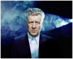

«Твин Пикс»: кто убил Лору Палмер и другие вопросы и ответы
— Итак, агент, как вы находите этот уголок?
— Рай, сэр.
— Значит, в этом месяце в понятие рая входят убийство, несколько покушений и поджог?
— Рай — это большое и интересное место, сэр.
Диалог агента Купера и судьи
Этот сериал стал символом 1990-х. Его показывали по ТВ поздно вечером, когда реальность размывалась и приобретала черты сна. Именно в такие моменты странная вселенная Дэвида Линча легко просачивалась в головы зрителей, и мир уже никогда не был прежним.
С тех пор мы знаем, что совы не то, чем кажутся. А вопрос «Кто убил Лору Палмер?» не перестаёт нас мучить, хотя в сериале на него вроде бы дали ответ. Или нет? Таков Дэвид Линч — он предпочитает, чтобы ответы на вопросы зрители искали сами. Грядущий третий сезон «Твин Пикса», недавно анонсированный Линчем, тоже вряд ли что-то прояснит. Поэтому попробуем разобраться в хитросплетениях сюжета сами.

Название городка Твин Пикс означает «двойные вершины», и ударение стоит ставить на первом слове.
Неправильные совы
Режиссёр Дэвид Линч и сценарист Марк Фрост придумали «Твин Пикс» вскоре после съёмок «Синего бархата», и сериал получился похож по атмосфере на этот сюрреалистический детектив. Это две истории о том, что наш обыденный мир от мира трансцендентного зла отделяет лишь тонкая стенка. И в неё постоянно кто-то стучит с той стороны, грозя превратить серые будни в кровавый кошмар.
Что может быть лучшим воплощением обыденности, чем захолустный американский городок, затерянный в лесах Северо-Запада? Твин Пикс — это главная «сова» сериала. Он не то, чем кажется. Два раза не то. У него два скрытых «лица», как убийц у Лоры Палмер. И зритель волен сам выбирать, какое из лиц он выберет.
А может быть, он предпочтёт «развидеть» оба потайных слоя Твин Пикса, удовольствовавшись красивой картинкой? А что, все задатки мыльной оперы у сериала есть: любовные треугольники, финансовые аферы, неожиданные катастрофы, чудесные спасения и воскрешения из мёртвых, даже комические эпизоды (у Линча странное чувство юмора, но оно определённо есть). К тому же Твин Пикс населяют сплошь прекрасные женщины с безупречными причёсками и макияжем, суровые немногословные мужчины, невинные жертвы и циничные злодеи.
«Чем не «Санта Барбара»?» — издевается над наивным зрителем Линч, придумавший «сериал в сериале». На экранах городка идёт вымышленная мыльная опера «Приглашение к любви», пародирующая не только «телевидение для домохозяек», но и сам сериал, в котором количество совпадений и нелогичных событий превышает допустимое для реалистического произведения.
Но стоит Ронетте Пуласки, сбежав от похитителя, пересечь границу двух штатов — как дело об убийстве Лоры Палмер переходит в ведение ФБР, а под глянцевой журнальной картинкой Твин Пикса обнаруживается криминальная бездна. Приграничный городок оказывается перевалочным пунктом для контрабанды и наркотрафика, за местную лесопилку ведутся кровавые битвы с привлечением вооружённых бандитов, миллионер содержит подпольное казино с борделем, старшеклассники нюхают кокаин в туалете. А первая красотка города, всеобщая любимица Лора Палмер, промышляет проституцией — не ради денег, а из любви к острым ощущениям.
Как всё это напоминает нашу провинцию начала 1990-х! Разница только в уровне зарплат и в качестве работы полиции, а проблемы те же. Неудивительно, что на постсоветском пространстве «Твин Пикс» стал таким же культовым, как в Америке.

Большая часть сериала снята в Сноукволми, штат Вашингтон. Местный железнодорожный мост с тех пор так и называют «Мост Ронетты».
Если оставаться на этом слое восприятия, то всю мистику можно объяснить как символы. Духи-подселенцы МАЙК и БОБ — персонификации психиатрических диагнозов, Чёрный Вигвам — совокупный образ коллективного бессознательного и всех криминальных заведений Твин Пикса, а сны агента Купера — просто следствие его обострённой профессиональной интуиции и тонкой душевной организации. Она-то его и погубила — приняв слишком близко к сердцу убийства девушек и угрозу жизни возлюбленной, бедняга сошёл с ума, какая досада.
Но можно пойти глубже и шагнуть за грань грязной криминальной драмы на уровень мифов и легенд, где любое зло (и добро, впрочем, тоже) материализуется в виде мест и персонажей. И здесь зло становится пугающе реальным. Но если у врага есть лицо, ты, по крайней мере, знаешь, с кем имеешь дело, и можешь с ним бороться. С третьей стороны — в легенды и мифы можно просто сбежать от реальности. В общем, и здесь выбор только за зрителем.
Хитрый Линч и здесь устроил бесстыдное обнажение приёма. Мало того, что он завершает основную линию сериала за 12 серий до финала. Эта серия ещё и заканчивается разговором майора Бриггса и агента Купера, которые словно подслушали, о чём думают зрители по ту сторону экрана. Они обсуждают, реален ли БОБ или это просто выдумка для того, чтобы не видеть более страшных вещей.
Спойлер!
«Разве лучше поверить в человека, который растлевает, насилует и убивает собственную дочь?» — задаёт риторический вопрос Купер.
И правда, уж лучше пусть будут Чёрный Вигвам и духи-подселенцы…
Дом, который построил БОБ
Мистика «Твин Пикса» только кажется сложной, запутанной и нелогичной. Да, Линч любит и умеет создавать атмосферу абсурда, но подсказки для зрителя он оставляет на поверхности (вспомните написанные им «10 подсказок» для фильма «Малхолланд Драйв»). У потустороннего мира сериала есть чёткие очертания, входы, выходы и законы, по которым он функционирует.
Недаром из героев этот мир лучше всего понимают Дейл Купер, знаток тибетской мистики, помощник шерифа Хок, индеец по происхождению, и майор Бриггс, который в ходе секретного проекта прослушивал сигналы внеземных цивилизаций. Всё это люди, глубоко убеждённые, что в мире есть вещи, которые нельзя потрогать руками. Майор Бриггс на этот счёт цитирует Шекспира: «Есть многое на свете, друг Горацио…».

Дейл Бартоломью Купер получил имя в честь Д.Б. Купера, который в 1971 году угнал самолёт «Боинг 727-51». Это одно из немногих «идеальных преступлений»: угонщик получил деньги, спрыгнул с самолёта с парашютом и остался непойманным (впрочем, возможно, он погиб во время прыжка).
Как это часто бывает, режиссёр наделил главного героя многими своими чертами. Купер — интуит, знающий наизусть Тибетскую книгу мёртвых (словами оттуда он провожает в последний путь умирающего Лиланда Палмера), в своей работе он пользуется гаданиями не реже, чем дедукцией. Иногда, правда, мистики в его работе становится больше, чем способны выдержать окружающие — в частности, трезвомыслящий шериф Трумен, с которым Купер заводит дружбу.
Вообще, некоторые черты Купера — его обаяние, талант завоёвывать друзей и влюблять в себя женщин, волшебная способность выигрывать в казино («Я всегда выигрываю, если играю на казённые деньги»), умение чутко относиться к чувствам людей — указывают на то, что в главном герое Линч воплотил «идеального себя». «У тебя есть только одна проблема — ты совершенен», — говорит Куперу влюблённая в него Одри Хорн. Характерно, что воплощать на экране свой идеал Линч доверил Кайлу Маклахлану, который долгие годы был его любимым актёром, его «марионеткой», как Джонни Депп у Тима Бёртона.
Роли для Лоры

Прототипом Лоры Палмер была… Мэрилин Монро. Именно для работы над её биографией изначально пригласили работать Фроста и Линча. Изучив трагическую историю актрисы, Линч сказал, что это всё интересно, но ему хотелось бы посмотреть на Мэрилин в реальном мире — в том, где она не стала звездой, но сохранила харизму и ненасытную сексуальность. Конечно, эта версия тоже кончалась трагедией, но история получалась совсем другая.
Изначально на роль Лоры режиссёр хотел взять какую-нибудь местную актрису из Сиэтла, чтобы сэкономить на кастинге и гонораре. Девушке предстояло появиться в пилотном эпизоде всего лишь в роли трупа, завёрнутого в полиэтилиен. Этой девушкой оказалась Шерил Ли. Обворожительная блондинка зацепила Линча настолько, что он вписал в сценарий кучу флэшбеков, в которых появляется Лора, и нового персонажа — Мэдди Фергюсон, кузину Лоры, поразительно похожую на неё внешне, но совершенно иную по характеру. Имя и фамилия этой героини взяты из фильма Хичкока «Головокружение», где также фигурировали женщины-двойники — блондинка и брюнетка.
Шерил должна была сыграть ещё и третью героиню по имени Джуди — она упоминается в «Огонь, иди со мной», но так и не появляется. Возможно, это наверстают в третьем сезоне.
Место: Белый и Чёрный Вигвамы
Чёрный Вигвам и его двойник, Белый Вигвам, Линч придумал не сам. И взял не из индейской мифологии, а из теософской. Теософия — мозаика околорелигиозных и эзотерических учений, модная в начале ХХ века и пустившая ростки в шестидесятые на Западе, а в восьмидесятые-девяностые и в наших краях (мода на эзотерику и «тайное знание» совпала у нас с показом «Твин Пикса» по ТВ, и это тоже важно). Линч увлекался западной и восточной мистикой, он и сейчас практикует медитацию и пропагандирует её как средство достичь внутреннего покоя и войти в контакт со своим творческим началом.
В 1917 году Алистер Кроули, одна из ключевых фигур теософии, написал роман «Лунное дитя». Это история о войне двух волшебных мест — Белого Вигвама, которым правит некто Ифф, и Чёрного Вигвама, лидера которого зовут Дуглас. Магическая война ведётся за душу нерождённого ребёнка, того самого «лунного дитя». При этом действие происходит на Земле, в Лондоне, Париже и Неаполе. Белый и Чёрный Вигвамы в изображении Кроули имеют фэнтезийные черты, это что-то вроде Благого и Неблагого дворов фейри.
В 1980 году вышел сюрреалистический роман писателя-визионера, верного сына эпохи Нью Эйдж, Уильяма Берроуза «Города красной ночи». В нём упоминаются «чёрные и белые ложи»:
Миддлтауном управляет магическое братство. Тебе, наверняка, рассказывали о чёрных и белых ложах, путях правой и левой руки. Поверь мне, чётких различий нет. Но Миддлтаунские Братья стараются не попадать в ситуацию, в которой им придётся прибегнуть к приёмам чёрной магии.
Lodge — по-английски и «ложа» (в масонском значении), и «Вигвам».
В сериале Белый и Чёрный Вигвамы — это обители духов. Именно так их описывает Уиндом Эрл, «закадычный враг» Дейла Купера, чёрный маг и амбициозный убийца. В Белом Вигваме обитают светлые и прекрасные духи, покровительствующие людям, а в чёрном — духи злобные, питающиеся человеческой болью. Но в индейской легенде, которую Куперу рассказывает Хок, Чёрный и Белый Вигвамы — это обиталища человеческих душ после смерти. Или даже при жизни, если в Вигвамы осмелится войти шаман или маг.
Мой народ верит, что Белый Вигвам — это место, где живут духи, которые правят человеком и природой на земле. Есть ещё легенда о месте, которое называется Чёрный Вигвам… Как гласит легенда, это воплощённая тень Белого Вигвама. Каждый дух должен пройти через него на пути к совершенству. Там ты встретишься с воплощением своей тени. На языке моего народа это называется «Живущий на Пороге». Но говорят, если попадёшь в Чёрный Вигвам, не обладая безупречной храбростью, он безвозвратно уничтожит тебя.
Помощник шерифа Хок
Есть три способа попасть в Вигвамы. Первый — умереть. Если верить Хоку, никто из жителей Твин Пикса не пройдёт мимо этих мест, это их персональные Рай и Ад. Второй — уснуть, но в этом случае обитатели Вигвамов решают, что показать и кому. Третий — воспользоваться единственным входом в Вигвамы в лесу Гоуствуд («призрачный лес»). Но мало найти место — врата в Вигвамы открываются лишь раз в полвека, когда встречаются Юпитер и Сатурн. Кроме того, к каждому из Вигвамов есть свои эмоциональные «ключи»: для Чёрного это страх, для Белого — любовь.

В снах агента Купера появляется магический круг из 13 свечей вокруг горки земли, на которой что-то лежит. Это «что-то» — бутафорское отрезанное ухо, которое находит другой герой Маклахлана, детектив Бомон, в фильме «Синий бархат».
Попасть внутрь Вигвамов не так-то просто. Всех приходящих извне встречает «предбанник» — Красная Комната. Именно её видит во сне Купер и в неё же попадает, когда в финале приходит выручать свою возлюбленную Энни из рук Уиндома Эрла. На самом деле Красных Комнат две, и они идентичны. Разницу между ними поясняет Куперу карлик, он же Человек Из Другого Места: в Красной Комнате решается вопрос, в какой из Вигвамов отправится пришелец. От его силы духа и чистоты поступков зависит, с какими духами он будет иметь дело.
Спойлер!
Например, БОБ хотел забрать к себе в Чёрный Вигвам Лору Палмер, но она оказалась недостаточно запятнана (несмотря на свою порочность, Лора была доброй и сильной девушкой). Она отправилась в Белый Вигвам и стала своего рода ангелом для своих близких. А Джози Паккард, одержимая местью, оказалась захвачена БОБом в тот момент, когда убивала своего бывшего хозяина Экхарта. Её душа оказалась частично в Чёрном Вигваме, а частично — в отеле Great Northern, где произошло убийство.

Джози Паккард, вдову владельца лесопилки, должна была сыграть Изабелла Росселини — на тот момент невеста Дэвида Линча, сыгравшая главную роль в «Синем бархате». Но она ушла из проекта (и от Линча) раньше, чем начались съёмки. На замену взяли китаянку Джоан Чен, а в сценарии появились связи Джози с гонконгской мафией. Изначально героиню звали Джованна, и она была итальянкой, как и Росселини.
В Чёрном Вигваме застряли надолго, если не навсегда, сослуживцы Купера, агенты Честер Десмонт (Крис Айзек) и Филип Джефферс (Дэвид Боуи). Первому не повезло расследовать убийство Терезы Бэнкс — предыдущей жертвы БОБа, точнее, Лиланда Палмера. Что случилось со вторым — неясно, известно только, что он бесследно исчез за два года до событий фильма «Огонь, иди со мной», приквела к сериалу.
Спойлер!
В фильме он неожиданно возникает в своём старом офисе и пытается рассказать, где был и что видел, но, судя по всему, обитатели Вигвамов снова забирают его.
Эпизод с агентом Джефферсом показывает одно важное свойство Вигвамов: в них не существует времени. Поэтому Лора и Купер видят один и тот же сон, в котором они встречаются и девушка сообщает агенту, кто её убил. Но Лора видит этот сон в ночь перед своей смертью (она уже знает, что погибнет), а Купер — уже после того, как было найдено её тело. Для Вигвама это не имеет значения — в нём Лора всегда жива и прекрасна.
А вот с Купером в финале второго сезона всё сложно.
Спойлер!
Добровольно принеся себя в жертву ради любимой, отдав своё тело БОБу, он создал прецедент, которого, кажется, в истории Вигвамов ещё не было. Его движущей силой была любовь, а не страх — то есть, по совести, его душа должна пребывать в Белом Вигваме. На это же намекает один из последних кадров серии, где Купер и Лора сидят рядом и радостно смотрят друг на друга. Эта уникальная ситуация не могла не стать сюжетной основой для грядущего третьего сезона.

Финальный кадр «Твин Пикса» много лет снился фанатам в кошмарах.
Ковёрный БОБ
Фрэнк Силва, художник-декоратор индейского происхождения, получил роль злобного духа БОБа по случайности. Однажды Линч увидел колоритного Силву, по ошибке задвинувшего дверь тяжёлым шкафом, и представил себе демона, который рвётся на свободу. В тот же день режиссёру сообщили, что сцену с ужасным видением Сары Палмер придётся переснимать: в зеркале отразился член съёмочной группы. Разумеется, это был Силва. Мистически настроенный Линч счёл это знаком, и вопрос с актёром на роль БОБа был решён.
К сожалению, Силва умер от СПИДа в 1995 году. Поэтому или БОБа сыграет другой актёр, или он вовсе не появится на экране «во плоти».

Никаких романов!

В начальном варианте сценария у агента Купера должен был случиться роман с Одри Хорн. Но Кайл Маклахлан в это время встречался с Ларой Флинн Бойл (Донна Хейворд), которая решительно этому воспротивилась. Cценарий был переписан: Купер тактично объяснил влюблённой Одри, что им лучше остаться друзьями. Странно, что против романа Купера с Энни возражений не последовало. Впрочем, представить агента с его «облико морале» крутящим любовь с неуравновешенной старшеклассницей как-то не получается.
Жители вигвамов: Карлик, Великан и все-все-все
Духи, живущие в Вигвамах, играют по правилам. Даже беспредельщик БОБ и его экс-подельник МАЙК не селятся в чужих телах без приглашения (зато если получают его, то обосновываются там всерьёз и надолго, до физической смерти «носителей»). Этим они напоминают вампиров и прочую нечисть, которая не может пересечь порог дома без разрешения.
Духов Вигвамов — не людей, которые попали туда после смерти, — в сериале показано немного. Это, конечно, сам БОБ — дух-разрушитель, маньяк-убийца, питающийся болью и страданиями жертв (в фильме «Огонь, иди со мной» человеческие боль и страдание называются на языке духов одним словом — «гармонбозия»). Это его бывший коллега МАЙК, раскаявшийся в своих делах и посвятивший жизнь войне с БОБом — однако он привязан к одному «дому», телу однорукого торговца обувью Филипа Жерара. Это Человек Из Другого Места, карлик, в которого превратилась рука Жерара — МАЙК отрубил её, чтобы лишить себя возможности совершать убийства. Это Великан — дух-помощник агента Купера, который даёт ему подсказки в расследовании не только по «прямой связи», но и через носителя — портье-маразматика из отеля Great Northern. Великан — явно обитатель Белого Вигвама, в отличие от остальных духов.

Красные занавески появляются почти в каждом фильме Линча. В «Малхолланд Драйв» красным бархатом оформлен мистический клуб «Силенцио». В «Синем бархате» на фоне таких штор поёт главная героиня. Ещё их можно увидеть в «Шоссе в никуда».
Есть ещё пара персонажей, чья связь с Вигвамами до конца не ясна, хотя они определённо не люди. Это миссис Тремонд и её внук Пьер. Их встречает Донна Хейуорд, подруга Лоры, когда расследует убийство. Из странного диалога в доме миссис Тремонд мы узнаём, что Пьер — фокусник. Возможно, он тот самый «чародей», упомянутый в стихотворении, которое цитируют духи: «Сквозь грядущего прошлого мрак / Чародей разглядеть стремится / Выход единый меж двух миров. / Огонь, иди со мной».
Именно миссис Тремонд указывает Донне, где искать тайный дневник Лоры. А в фильме выясняется, что Тремонды жили недалеко от места, где была убита Тереза Бэнкс. Варёная кукуруза, которую Донна видит в ладонях Пьера, — материальное воплощение той самой «гармонбозии», на которую охотятся духи Чёрного Вигвама. Фанаты до сих пор спорят, злыми или добрыми духами были Тремонды. По одной из версий, это давние жертвы БОБа, которые хотят свести с ним счёты.
В мире людей у духов есть не только носители, но и «медиаторы» — проводники, которые либо стоят очень близко к границе с Вигвамами, либо просто умеют получать и расшифровывать послания оттуда. Майор Бриггс, по его словам, бывал в Белом Вигваме и получал подсказки от его обитателей. Таинственная Дама С Поленом даёт Куперу верные советы в расследовании, получая их от своего полена.
А ещё с таинственным «чем-то в лесах» борется тайное общество «Парни из читальни». В него входят мужчины Твин Пикса, которые не только воюют с преступностью, но и противостоят потустороннему злу, о чём говорит шериф Трумен. Наконец, те самые совы, которые не то, чем кажутся, отмечают моменты, связанные с потусторонним, и появляются рядом с местами убийств.

По самой распространённой версии, в полено, которое носит Дама, вселилась душа её мужа. Фанаты подозревают, что её супругом был один из лесорубов, которые собирались в Красной Комнате в фильме «Огонь, иди со мной».
Расшифровать загадки сериала просто — если знать, куда смотреть. Линч оставляет достаточно пространства для размышлений, но его фильмам нельзя отказать в логике. Просто она надёжно спрятана под завораживающей сюрреалистической мишурой. Такую логику можно найти в странных снах: Линч — скорее Кэрролл, чем Дали.
Любезная Диана

Кто такая Диана, к которой обращается Купер в своих диктофонных записях? Самая тривиальная версия гласит, что это секретарша или ассистентка директора в ФБР. Самая романтическая — что это бывшая либо настоящая любовница Купера (что сомнительно — на начало «Твин Пикса» Купер ещё не справился с потерей Кэролайн). Самая остроумная — что это имя самого диктофона: с Купера станется давать личные имена своим вещам.
Возвращение в Твин Пикс
В начале этого года вся сериалосмотрящая общественность была поднята на уши: Дэвид Линч объявил, что грядёт третий сезон «Твин Пикса». Не римейк, не другая история в той же локации, а продолжение старой истории с теми же актёрами, которое покажут на канале Showtime. Это хорошо, потому что канал знаменит очень разными, но качественными телешоу — «Родина», «Блудливая Калифорния», «Декстер», «Мастера секса». Более того, Марк Фрост пообещал финал, который удовлетворит все чаяния фанатов. И все девять эпизодов нового сезона поставит сам Дэвид Линч. Такого счастья просто не бывает.
Важный факт: новый сезон будет снят на плёнку, а не в цифровом формате. Значит, «картинка» сериала будет заметно отличаться от того, к чему мы привыкли на ТВ. Она будет напоминать старый добрый «Твин Пикс», где игры с цветом, светом и тенью были важной частью атмосферы.
На самом деле всё логично, этого следовало ожидать ещё в начале 1990-х — но тогда мы ещё не догадывались, что Фрост и Линч слов на ветер не бросают. Вспомните, что агент Купер увидел себя во сне постаревшим. А Лора Палмер сказала ему: «Увидимся через двадцать пять лет». Вот эти годы и прошли. Неужели Линч с Фростом действительно верили, что у них получится? Или им это тоже сказал Карлик в Красной Комнате?

Майкл Джей Андерсон, сыгравший карлика, жив, но вряд ли появится в новом сезоне — он ушёл на покой.
Едва ли не первым отреагировал на новость Кайл Маклахлан. У них с Линчем был долгий период размолвки (из-за какой-то глупости, которую оба не любят вспоминать), но теперь всё позади. «Пора раскочегарить кофеварку и достать из шкафа костюм!» — написал Кайл в твиттере. Вслед за ним интригующими «твитами» обменялись Мадхен Амик (Шелли Джонсон, официантка и жена бандита-дальнобойщика Лео Джонсона) и Пегги Липтон (Норма Дженнингс, владелица кафе). Из их диалога следовало, что кафе, в котором агент Купер ел божественный вишнёвый пирог, всё ещё существует. Дэвид Духовны надеется на возвращение Денизы Брайсон. Мы тоже надеемся — персонаж был восхитительный.

Дэвид Духовны получил роль Малдера во многом благодаря «Твин Пиксу», где блестяще сыграл агента отдела по борьбе с наркотиками, трансвестита Денниса/Денизу Брайсона.
Спойлер!
Даже Рэй Уайз, сыгравший Лиланда Палмера, намекнул, что вернётся, фразой «Счастлив находиться между двух миров». Его персонаж мёртв, но какое это имеет значение для Вигвамов?
Хуже то, что прошедшие годы лишили нас актёров, которые бесповоротно ушли на пенсию либо умерли. Но, разумеется, появятся и новые персонажи. А также новая тайна и новая детективная линия — ведь сериал рассчитан не только на старых фанатов, но и на новых «сериальных маньяков».
Угадываем сюжет нового сезона
Сюжет третьего сезона, как водится, хранится в секрете. Но по актёрскому составу и одной-единственной обмолвке Майкла Фроста можно кое-что предположить, а кое-что — домыслить и дофантазировать.
И тут без спойлеров ну совсем никак!
Итак, душа Купера находится где-то в Вигвамах, а одержимое БОБом тело делает его работу. Он всё ещё в ФБР и большую часть времени ведёт себя как старый добрый Купер. Но с возрастом агент всё больше начинает съезжать с катушек: злой дух требует пищи, а добыть её можно только убийствами. Не исключено, что Купер будет расследовать убийство, которое совершил он сам — точнее, БОБ.
И душу надо выручать — эта сюжетная линия, если верить Фросту, станет ведущей. Именно для неё был оставлен «хвостик» в приквеле «Огонь, иди со мной»: Лора видит во сне Энни, которая сообщает, что «добрый Дейл» заперт в Вигвамах, и просит записать это в дневнике. Да, дневник Лоры уничтожен, за исключением нескольких страниц, — но почему бы в третьем сезоне не всплыть его остаткам?
Изначально, по словам Фроста, спасать Купера должен был майор Бриггс. Кому, как не ему, знать все ходы и выходы в Вигвамах? Но Дон С. Дэвис, игравший его роль, скончался в 2008 году. Вряд ли Линч будет искать замену — скорее всего, место майора займёт его непутёвый сын, красавчик Бобби Бриггс (Дэна Эшбрук, сыгравший его роль, появился в списке актёров одним из первых).
Помогать младшему Бриггсу будут Дама-с-поленом (Кэтрин Колсон уже в списке) и «Парни из читальни» — шериф Трумен (Майкл Онткин) и его помощник Хок (Майкл Хорс). Шерифу, правда, после гибели любимой женщины было бы логично уйти на покой — но не в городке, где даже мэр занимает пост уже почти сорок лет.
Что до Одри Хорн, она наверняка выжила после взрыва в банке, устроенного Экхардом в последней серии второго сезона. Во всяком случае, актриса Шерилин Фенн в этом подозрительно уверена, хотя по сюжету сериала судьба её героини остаётся неясной. Возможно, Одри унаследовала отцовский бизнес после нервного срыва Бена Хорна (впрочем, Ричард Бимер, сыгравший городского миллионера, также намекнул на возвращение). Надо полагать, ей интересно иметь дело с отелем Great Northern, где обитают призраки и прогуливаются туда-сюда духи в поисках тел.
Если владелицей отеля станет эксцентричная Одри, это будет как нельзя кстати. Впрочем, бизнес ей, вероятно, придётся делить с внезапно объявившейся сестрой: в последней серии второго сезона упоминалось, что биологическим отцом Донны Хейуорд мог быть Бен Хорн. Соперничество двух красивых и неглупых женщин — а из старого «Твин Пикса» очевидно, что Донна и Одри не подружки и никогда ими не станут, — может стать не менее напряжённым, чем «война за лесопилку». Кроме того, у многих героев наверняка подросли дети. Дочь Пегги Липтон, Рашида Джонс, стала известной в Америке телеактрисой — было бы занятно, если бы она тоже появилась в новом сезоне.
С другими персонажами ситуация неясна. Непонятно, вернётся ли в город байкер Джеймс Херли, жених Донны, и чем разрешится любовный треугольник Нормы, Эда и его жены — полусумасшедшей Надин, как раз пришедшей в себя в конце второго сезона. Выжил ли ловкий мерзавец Лео Джонсон после встречи с тарантулами? Дождётся ли настоящего Купера его Энни, ради которой он пожертвовал душой и телом?
Но детали «мыльной оперы» как раз волнуют далеко не всех. Куда интереснее, что же там происходит — в Вигвамах? Можно ли туда попасть, не дожидаясь встречи Юпитера и Сатурна? Выберутся ли оттуда коллеги Купера или они безвозвратно потеряны? Наконец, как там совы — по-прежнему не то, чем кажутся, и что же они вообще такое
Между вторым и третьим сезоном «Твин Пикса» успело вырасти целое поколение. Кое-кто даже не знает, что некогда был такой сериал. И только в самом городке Твин Пикс, скорее всего, ничего не изменилось — провинция везде провинция, время в ней течёт немногим быстрее, чем в Красной Комнате. Здесь едят всё те же пироги, танцуют под ту же музыку, ездят на тех же машинах и выясняют те же отношения. А в глубине леса мерцает потусторонним светом вход в иной мир — тот, который всегда где-то рядом.
Они сделали «Твин Пикс»
Дэвид Линч, режиссёр и продюсер

Снимает странное, ни на что не похожее кино, за которое иногда получает премии — так, у него две Золотых пальмовых ветви (за «Диких сердцем» и «Малхолланд Драйв»). Иногда не получает, но его это мало волнует. Снимает клипы для музыкантов-авангардистов, записывает музыкальные альбомы и сочиняет концепт-арты для художественных выставок. Увлекается трансцедентальной медитацией, написал об этом книгу «Поймать большую рыбу».
Женился в четвёртый раз — на молодой актрисе Эмили Стофл. Отец четверых детей. Сторонник Демократической партии. Живёт в Лос-Анджелесе. Лично занимается дизайном своего сайта davidlynch.com. Как и агент Купер, не может жить без кофе — даже запустил собственную линейку органических кофейных зёрен.
Марк Фрост, сценарист
Сын театрального актёра Уоррена Фроста (он сыграл в «Твин Пиксе» доктора Уилла Хейуорда). До «Твин Пикса» прославился работой над полицейской драмой «Блюз Хилл-стрит», а после — сценарием фильма «Фантастическая четвёрка». Помимо сценариев, пишет детективы, фантастику и книги об истории гольфа. На русский переводились его романы «Список семи» и «Шесть мессий», где главным героем-следователем был Артур Конан Дойл. С Дэвидом Линчем знаком с 1986 года. На съёмках «Твин Пикса» часто был вынужден его замещать, когда режиссёр отвлекался на работу над фильмом «Дикие сердцем».
Анджело Бадаламенти, композитор
Родился в Нью-Йорке, по происхождению итальянец. В 1986 году был приглашён на съёмки «Синего бархата» как учитель пения для Изабеллы Росселини. В итоге написал для неё песню на стихи Линча, сыграл в фильме пианиста-аккомпаниатора и стал любимым композитором режиссёра. Написал музыку не только для «Твин Пикса», но и для «Диких сердцем», «Малхолланд Драйва», «Шоссе в никуда» и «Простой истории». Получил премию «Грэмми» за главную тему «Твин Пикса» — сомнамбулические фортепианные аккорды, врезающиеся в мозг почти как семь нот из «Секретных материалов».
Дирижировал оркестром на открытии Олимпийских игр в Барселоне. Работал с Дэвидом Боуи, Полом Маккартни, Майклом Джексоном, Ниной Симон, Марианной Фейтфул, Долорес О’Риордан. Написал музыку для «Сталинграда» Фёдора Бондарчука.
Кайл Маклахлан, актёр
Стал знаменит благодаря роли Пола Атрейдеса в «Дюне» Линча. Но агента ФБР впервые сыграл не у него, а в фантастическом триллере «Скрытый враг» (1987), вариации на тему «Нечто». За роль Купера получил «Золотой глобус».
После ссоры с режиссёром практически пропал из большого кино. Зато сыграл две заметные роли на ТВ — в сериалах «Отчаянные домохозяйки» и «Секс в большом городе». Кроме того, Кайл появился в ситкоме «Как я встретил вашу маму» и во втором сезоне «Агентов Щ.И.Т.». Женат на телепродюсере Дезире Грубер, с женой и сыном живёт то в Нью-Йорке, то в родном штате Вашингтон (Маклахлан родом практически из окрестностей Твин Пикса), где занимается виноделием.